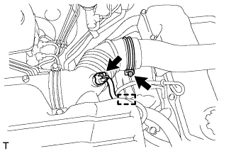
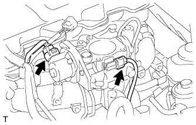

КОРПУС ДРОССЕЛЬНОЙ ЗАСЛОНКИ ДИЗЕЛЬНОГО ДВИГАТЕЛЯ > СНЯТИЕ |
| 1. REMOVE RESONATOR WITH AIR CLEANER CAP SUB-ASSEMBLY |
|  |
Disconnect the sensor connector.
Detach the wire harness clamp.
Loosen the hose clamp and remove the resonator with air cleaner cap.
 |
Detach the 4 hook clamps, and then remove the air cleaner cap and resonator with air cleaner cap.
| 2. REMOVE INTAKE PIPE |
 |
Remove the 2 bolts.
Loosen the hose clamp and remove the intake pipe.
| 3. REMOVE INTAKE FLANGE |
Remove the bolt and disconnect the heater water hose.
| *A | w/o Rear Heater |
| *B | w/ Rear Heater |
Disconnect the manifold absolute pressure sensor connector.
Disconnect the PCV hose.
Remove the 3 nuts, intake flange and gasket.
| 4. REMOVE DIESEL THROTTLE BODY |
|  |
Disconnect the throttle open switch connector.
Disconnect the throttle control motor connector.
Remove the diesel throttle body and gasket.